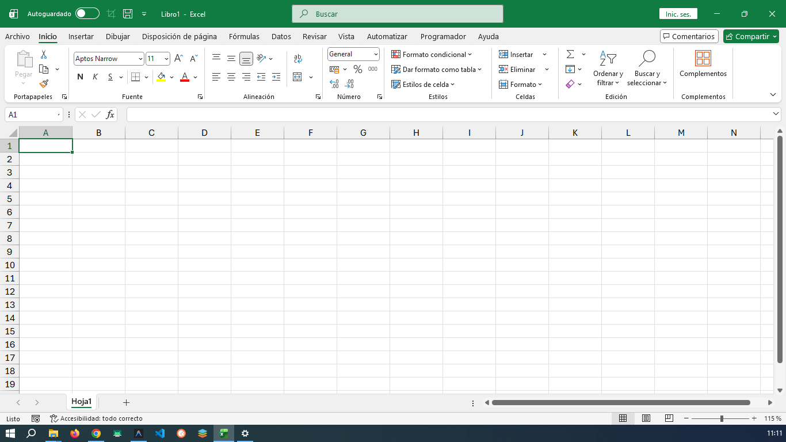

Entorno de Trabajo y Ventana Principal
Conoce las partes fundamentales de la interfaz gráfica de Excel.

Partes de la Ventana Principal de Excel
Excel organiza las opciones y herramientas en distintas partes que a continuación se muestran en la imagen superior:
- Barra de Título Muestra el nombre del libro de trabajo actual y el nombre del programa.
- Barra de menús (Pestañas) Contiene las diferentes pestañas (Archivo, Inicio, Insertar, etc.) que agrupan las funciones de Excel.
- Barra de herramientas (Cinta de Opciones) Conjunto de botones y herramientas que permiten realizar tareas específicas según la pestaña o menú seleccionado.
- Cuadro de Nombres Muestra la referencia o dirección de la celda activa (por ejemplo, D7).
- Barra de Fórmulas Espacio donde se puede introducir, ver o editar el contenido (texto, números o fórmulas) de una celda.
- Indicadores de columna Son las letras (A, B, C...) que identifican de forma vertical las columnas de la hoja.
- Indicadores de fila Son los números (1, 2, 3...) que identifican de forma horizontal las filas de la hoja.
- Celda (D7) Es la intersección entre una columna y una fila; es la unidad básica donde se insertan los datos.
- Hoja de Cálculo Es el área de trabajo principal compuesta por la cuadrícula de celdas.
- Pestaña de hoja Permite cambiar rápidamente entre las diferentes hojas que componen un mismo archivo o libro.
- Barra de desplazamiento vertical Permite mover la vista de la hoja hacia arriba o hacia abajo.
- Barra de desplazamiento horizontal Permite mover la vista de la hoja hacia la izquierda o hacia la derecha.
- Barra de Estado Muestra información sobre el estado del programa, el zoom y los diferentes tipos de vista del documento.
Ventana principal de Excel
